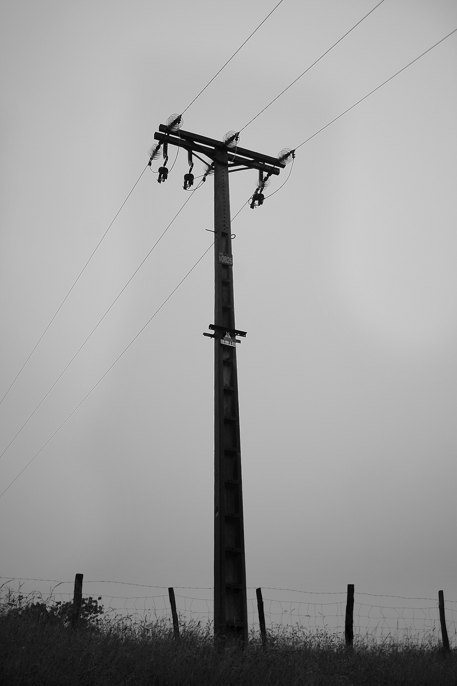
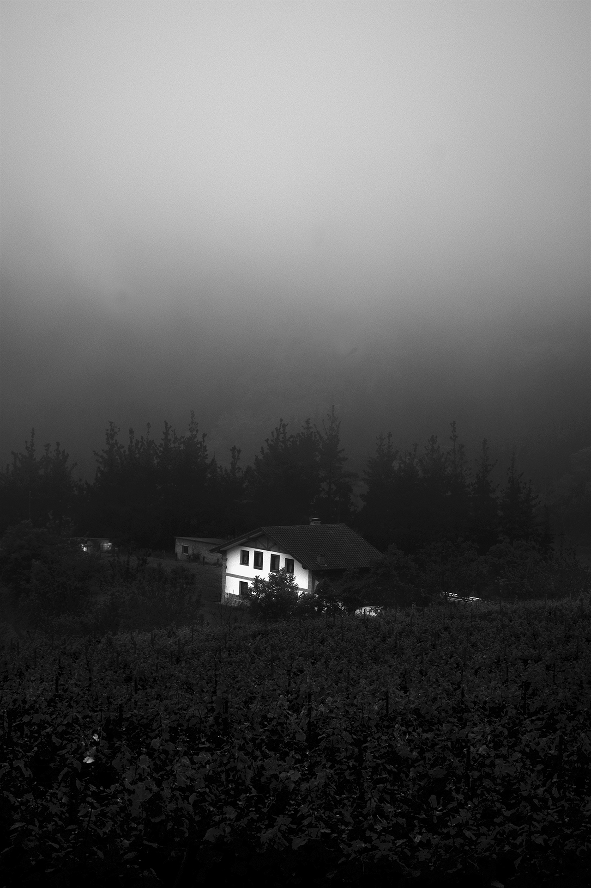
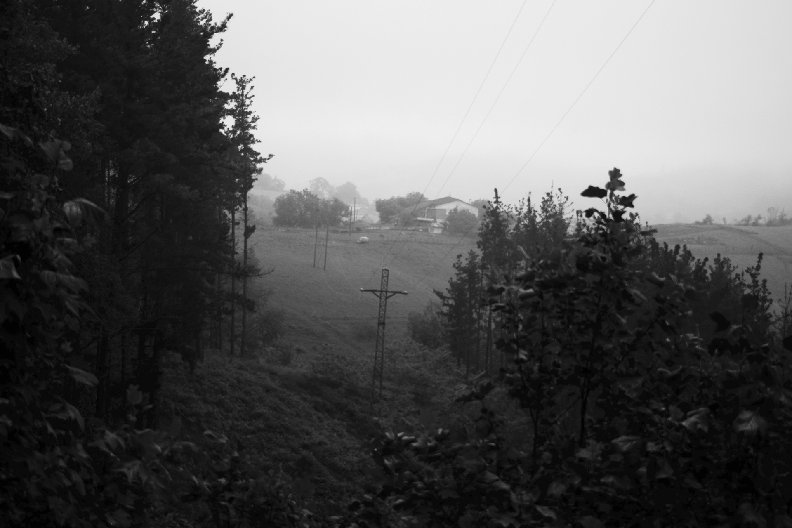

  
DENBORA
Comienzo mi declaración, preguntándome sobre la naturaleza del
tiempo.
¿Dónde se encuentra
aquello que ya no regresa? ¿Es que existe
una suerte de nube celeste en
la que se archivan las
memorias? ¿O se trata de un receptáculo
de recuerdos al que
accedemos mediante la imaginación?
San Agustín, en sus confesiones, afirma que pasado y presente
conviven en ‘algún
lugar’, y
que al pasado accedemos mediante las imágenes que
hoy perduran y que han dejado
huella en
nuestro espíritu.